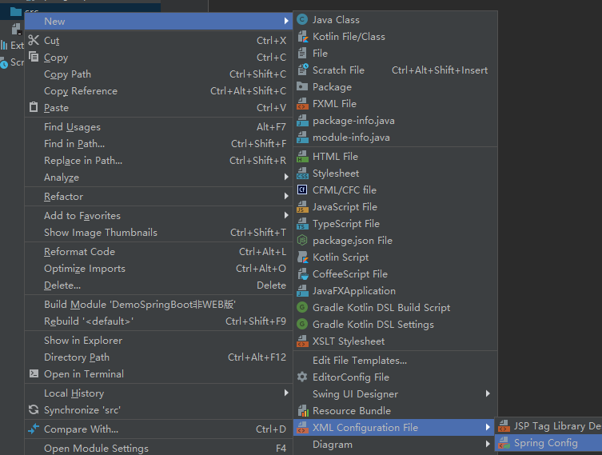

SPRING BOOT编写流程
框架编写流程：
导包
- 容器相关的包： beans core context expression
- 非WEB项目必须手动导包，并且要右键添加到web项目
- 除此之外还要导入一个commons-logging的日志包，没有会报错
写配置
spring配置文件中，集合了IOC容器管理的所有组件
源码（src）包下，右键创建一个spring configuration文件

1 |
|
- 测试
1 | package com.runsstudio.test; |
结果：Person{name=’菜龙’, email=‘220@qq.com‘, QQ=1165, gender=’male’}
我们没有创建对象，但是却获取了对象
存在的几个问题：
src 源码包开始的路径：称为类路径的开始
- （非WEB项目）所有源码包里的东西都会合并放在类路径里面；
- java：/bin/
- （WEB项目）/WEB-INF/classes 是类路径的开始
导入包必须5个一起导
先导包在创建配置文件
Spring容器接管了xml文件之后，xml文件会有一个小叶子 不然是没有的
几个细节：
ApplicationContext(IOC容器的接口) 有两个儿子，一个是ClassPathXmlApplicationContext 表示XML文件配置文件在类路径下，另一个是FileSystemXmlApplicationContext(“f://IOC.xml”)，表示XML文件配置在文件系统下
XML文件最好是放在src路径下，不要和bean放一起
Bean的对象是什么时候创建好的？new ClassPathXmlApplicationContext，创建容器的时候创建的，所以不用等到get的时候再创建对象
由于上面的特性，使用同一个组件，获取两次容器的对象，获取的地址是一样的，也就是说，同一个组件在IOC容器中是单实例的
如果要获取不存在的对象，比如Person person01 =(Person) ioc.getBean(“person21”); 会报org.springframework.beans.factory.NoSuchBeanDefinitionException: No bean named ‘person21’ available
最后一个细节，用property赋值一定是调用getter setter来赋值的
javaBean的属性名是由什么决定的？getter setter，首字母小写就是属性名